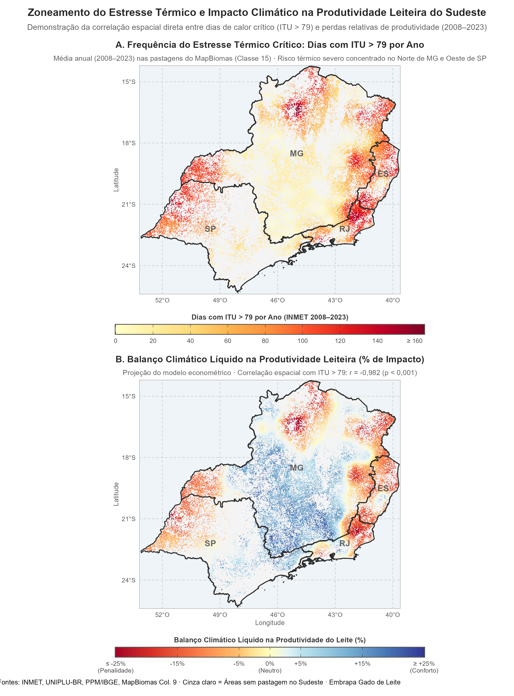

Projeção Espacial do Modelo Bioclimático de Produtividade Leiteira
Fundamentação Econométrica, Fontes de Dados e Álgebra Espacial da Equação 3 no Sudeste Brasileiro
1 1. O Modelo Econométrico de Painel
A base estrutural da pesquisa fundamenta-se em um modelo econométrico de dados em painel com efeitos fixos bidirecionais (município e ano), cobrindo o período de 2008 a 2023 em toda a Região Sudeste do Brasil:
\[\log(Y_{it}) = \alpha_i + \gamma_t + \beta_{\text{calor}} \cdot \text{ITU}_{it} + \beta_{\text{chuva}} \cdot \text{Chuva}_{it} + \varepsilon_{it}\]
1.0.1 Coeficientes Estruturais Estimados
- Estresse Térmico: \(\beta_{\text{calor}} = -0,00282 \quad (t = -4,17; \ p < 0,001)\)
- Disponibilidade Hídrica: \(\beta_{\text{chuva}} = +0,000117 \quad (t = 2,13; \ p < 0,05)\)
1.1 O que significam os Interceptos de Município e de Tempo?
A inclusão dos dois conjuntos de interceptos (\(\alpha_i\) e \(\gamma_t\)) assegura a consistência dos estimadores econométricos, neutralizando potenciais fontes de viés de variável omitida:
1.1.1 1. Intercepto de Município (\(\alpha_i\) - Efeito Fixo Municipal)
O termo \(\alpha_i\) representa um intercepto específico para cada município \(i\), constante ao longo dos anos. Ele absorve toda a heterogeneidade espacial não observada e invariante no tempo, incluindo:
- Fatores Físicos e Geográficos: Relevo, tipos de solo, declividade e altitude média municipal.
- Fatores Estruturais e Históricos: Tradição da bacia leiteira local, proximidade com polos industriais e laticínios, malha viária e infraestrutura instalada.
Importância: Sem o \(\alpha_i\), um município mais produtivo devido à qualidade de seus solos ou tradição zootécnica poderia ter seu desempenho erroneamente atribuído ao clima. O intercepto \(\alpha_i\) controla essas diferenças fixas entre localidades.
1.1.2 2. Intercepto de Tempo (\(\gamma_t\) - Efeito Fixo Temporal / Ano)
O termo \(\gamma_t\) representa um intercepto comum a todos os municípios em cada ano \(t\). Ele captura choques conjunturais e macroeconômicos agregados que afetam o setor leiteiro como um todo em determinado ano:
- Preços e Custos de Produção: Variações anuais no preço médio do leite e oscilações nos preços de insumos concentrados (milho e farelo de soja).
- Macroeconomia e Políticas Públicas: Linhas de crédito rural (Pronaf, Plano Safra), juros, inflação e câmbio.
- Avanço Tecnológico Difuso: Ganhos graduais de genética e manejo disseminados no setor.
Importância: O intercepto \(\gamma_t\) garante que choques econômicos globais não contaminem os parâmetros de resposta às oscilações climáticas.
Como os efeitos fixos (\(\alpha_i\) e \(\gamma_t\)) eliminam essas variáveis de confusão, os coeficientes \(\beta_{\text{calor}}\) e \(\beta_{\text{chuva}}\) representam a sensibilidade marginal climática direta, permitindo sua projeção geográfica contínua sobre as pastagens.
2 2. Fontes de Dados, Escalas e Resoluções Espaciais
Todos os dados foram espacializados e harmonizados para a mesma grade geográfica contínua sobre as pastagens do Sudeste:
| Variável / Produto | Fonte Oficial | Resolução / Escala Original | Resolução de Trabalho | Link Oficial / Referência |
|---|---|---|---|---|
| Estresse Térmico (\(\text{ITU}\)) | INMET (Instituto Nacional de Meteorologia) | Dados pontuais horários de estações meteorológicas automáticas | Grade regular \(0,02695^\circ\) (~\(3,0\text{ km}\) por pixel) via interpolação IDW | BDMEP / INMET |
| Precipitação (\(\text{Chuva}\)) | UNIPLU-BR (Unified Brazilian Rainfall Dataset) | Registros diários unificados de mais de 21.000 postos pluviométricos | Grade contínua \(0,02695^\circ\) (~\(3,0\text{ km}\) por pixel) | Repositório Zenodo / UNIPLU-BR |
| Máscara Temática de Pastagem | MapBiomas Brasil (Coleção 9) | Resolução espacial de \(30\text{ metros}\) (satélite Landsat) | Reamostrado para ~\(3,0\text{ km}\) (Classe 15: Pastagem, 33.640 células) | Plataforma MapBiomas |
| Produtividade Leiteira Base (\(Y\)) | IBGE — Pesquisa da Pecuária Municipal (PPM) | Nível municipal anual (2008–2023) | Atribuído às células forrageiras dos respectivos municípios | SIDRA / IBGE Tabela 74 |
2.0.1 Especificações Técnicas da Grade Espacial do Sudeste
- Sistema de Referência de Coordenadas (CRS): WGS 84 (EPSG:4326) — Coordenadas Geográficas.
- Extensão Espacial (Bounding Box): Oeste \(-53,12^\circ\), Leste \(-39,64^\circ\), Sul \(-25,33^\circ\), Norte \(-14,23^\circ\).
- Dimensões da Matriz: 412 linhas \(\times\) 500 colunas (\(206.000\) células totais; \(33.640\) células com pastagem válida).
- Formato e Compressão: GeoTIFF (.tif) com compressão LZW sem perdas e NoData nativo em NaN.
3 3. A Álgebra de Mapas e a Derivação da Equação 3
Com os coeficientes \(\beta\) estruturais estimados, a taxa percentual de impacto climático líquido sobre cada célula forrageira \(x = (\text{lon}, \text{lat})\) é modelada pela Equação 3:
\[\Delta\%_{\text{líquido}}(x) = \left(\exp\Big(\beta_{\text{calor}}\cdot(R_{\text{ITU}}(x)-\overline{\text{ITU}}) + \beta_{\text{chuva}}\cdot(R_{\text{Chuva}}(x)-\overline{\text{Chuva}})\Big) - 1\right)\times 100\]
3.1 Derivação via Variação Percentual Relativa
A estrutura matemática surge de forma direta comparando o comportamento esperado no ponto local \(x\) com a referência média regional das pastagens do Sudeste:
Produtividade logarítmica esperada na célula local \(x\): \[\log(Y_{\text{local}}) = \alpha + \beta_{\text{calor}} \cdot R_{\text{ITU}}(x) + \beta_{\text{chuva}} \cdot R_{\text{Chuva}}(x)\]
Produtividade logarítmica de referência na média regional: \[\log(Y_{\text{médio}}) = \alpha + \beta_{\text{calor}} \cdot \overline{\text{ITU}} + \beta_{\text{chuva}} \cdot \overline{\text{Chuva}}\]
Diferença de produtividade (\(\Delta \log(Y)\)): Ao subtrair o valor médio do valor local, o intercepto comum \(\alpha\) se anula algebricamente, restando os desvios climáticos ponderados: \[\Delta \log(Y) = \log(Y_{\text{local}}) - \log(Y_{\text{médio}}) = \log\left(\frac{Y_{\text{local}}}{Y_{\text{médio}}}\right)\] \[\Delta \log(Y) = \beta_{\text{calor}}\cdot(R_{\text{ITU}}(x)-\overline{\text{ITU}}) + \beta_{\text{chuva}}\cdot(R_{\text{Chuva}}(x)-\overline{\text{Chuva}})\]
Conversão Exponencial: Pela função exponencial inversa: \[\frac{Y_{\text{local}}}{Y_{\text{médio}}} = \exp(\Delta \log(Y))\]
Taxa Percentual Relativa (\(\Delta\%\)): A variação percentual relativa de qualquer grandeza em relação à sua referência é: \[\Delta\% = \left(\frac{Y_{\text{local}} - Y_{\text{médio}}}{Y_{\text{médio}}}\right) \times 100 = \left(\frac{Y_{\text{local}}}{Y_{\text{médio}}} - 1\right) \times 100\] \[\Delta\%_{\text{líquido}}(x) = \big(\exp(\Delta \log(Y)) - 1\big) \times 100\]
Assim, cada pixel \(x\) reflete diretamente se o seu clima particular gera vantagem líquida (\(> 0\%\)) ou desvantagem líquida (\(< 0\%\)) em relação ao padrão médio das pastagens do Sudeste.
4 4. As Escalas e as Ordens de Grandeza (Os Coeficientes \(\beta\))
Observe a magnitude dos coeficientes estruturais:
- \(\beta_{\text{calor}} = -0,00282\)
- \(\beta_{\text{chuva}} = +0,000117\)
A diferença na ordem de grandeza ocorre porque cada coeficiente multiplica variáveis com escalas físicas distintas:
4.0.1 A. Escala do Calor (\(R_{\text{ITU}}\))
- Unidade: Dias no ano com Índice de Temperatura e Umidade crítico (\(\text{ITU} > 79\)).
- Variação Regional: De cerca de \(0\) dias/ano (serras do Sul de MG) até mais de \(160\) dias/ano (Norte de MG e Noroeste paulista). Amplitude de cerca de \(150\) dias.
- Impacto isolado (+50 dias de estresse térmico): \[\Delta \text{expoente}_{\text{calor}} = -0,00282 \times (+50) = -0,141\] \[\exp(-0,141) - 1 \approx -13,1\%\]
4.0.2 B. Escala da Chuva (\(R_{\text{Chuva}}\))
- Unidade: Milímetros acumulados por ano (\(\text{mm/ano}\)).
- Variação Regional: De \(\approx 800\text{ mm}\) (semiárido mineiro) a \(\approx 2.000\text{ mm}\) (zonas litorâneas e serras), gerando desvios de \(\pm 500\text{ mm}\) ou mais.
- Impacto isolado (+500 mm de chuva): \[\Delta \text{expoente}_{\text{chuva}} = +0,000117 \times (+500) = +0,0585\] \[\exp(+0,0585) - 1 \approx +6,0\%\]
O coeficiente da chuva é menor na quarta casa decimal porque atua sobre centenas de milímetros. No entanto, o efeito fisiológico do calor no gado de leite é agudo, de modo que nas áreas mais quentes a penalidade térmica sobrepuja os efeitos favoráveis da chuva.
5 5. Aplicação Prática e Zoneamento Espacial
A correspondência espacial entre a incidência de calor crítico e o balanço líquido estimado pela Equação 3 evidencia o contraste regional no Sudeste:

- Condições Climáticas Locais:
- \(\Delta \text{ITU} = +70\text{ dias}\) acima da média regional
- \(\Delta \text{Chuva} = -300\text{ mm}\) abaixo da média regional
\[\begin{aligned} \Delta \log(Y) &= (-0,00282 \times 70) + (0,000117 \times (-300)) \\ &= -0,1974 - 0,0351 = -0,2325 \end{aligned}\]
\[\begin{aligned} \Delta\% &= (\exp(-0,2325) - 1) \times 100 \\ &\approx -20,75\% \end{aligned}\]
- Comportamento no Raster: Valor de \(\approx -21\%\), conferindo ao pixel coloração vermelha escura (severa perda de rendimento por estresse térmico somado a déficit hídrico).
- Condições Climáticas Locais:
- \(\Delta \text{ITU} = -40\text{ dias}\) (praticamente isento de calor crítico)
- \(\Delta \text{Chuva} = +200\text{ mm}\) acima da média regional
\[\begin{aligned} \Delta \log(Y) &= (-0,00282 \times (-40)) + (0,000117 \times 200) \\ &= +0,1128 + 0,0234 = +0,1362 \end{aligned}\]
\[\begin{aligned} \Delta\% &= (\exp(0,1362) - 1) \times 100 \\ &\approx +14,59\% \end{aligned}\]
- Comportamento no Raster: Valor de \(+14,6\%\), conferindo ao pixel coloração azulada (vantagem bioclimática líquida para produção leiteira a pasto).
6 6. Implementação Vetorizada em Python
No pipeline de dados, a álgebra de mapas da Equação 3 é executada em matrizes contínuas com Python (numpy e rasterio):
import numpy as np
import rasterio
# Coeficientes do modelo econométrico
BETA_CALOR = -0.00282
BETA_CHUVA = +0.000117
# Carregamento dos rasters contínuos
with rasterio.open("itu_inmet_anual_3km.tif") as src_itu, \
rasterio.open("chuva_uniplu_anual.tif") as src_chuva, \
rasterio.open("mascara_pastagem_mapbiomas.tif") as src_mask:
mat_itu = src_itu.read(1)
mat_chuva = src_chuva.read(1)
mask_pastagem = src_mask.read(1) == 15 # Classe 15: Pastagem (MapBiomas Col 9)
# Validação e mascaramento estrito
valid = mask_pastagem & np.isfinite(mat_itu) & np.isfinite(mat_chuva)
# Médias regionais das pastagens do Sudeste
media_itu = np.mean(mat_itu[valid])
media_chuva = np.mean(mat_chuva[valid])
# Variação do log (Equação 3)
d_log = (BETA_CALOR * (mat_itu[valid] - media_itu)) + \
(BETA_CHUVA * (mat_chuva[valid] - media_chuva))
# Conversão percentual relativa
liq_pct = np.full(mat_itu.shape, np.nan, dtype=np.float32)
liq_pct[valid] = (np.exp(d_log) - 1.0) * 100.0